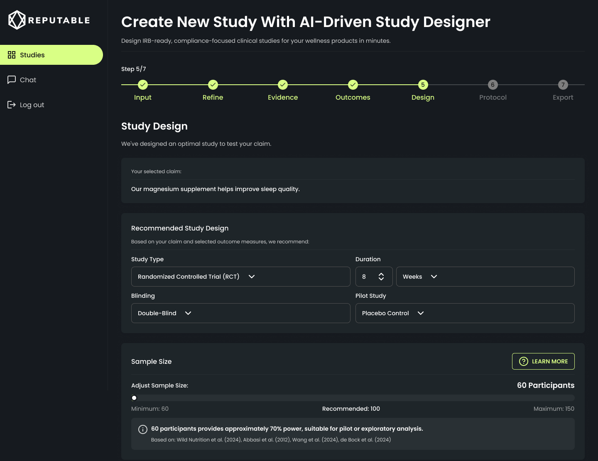
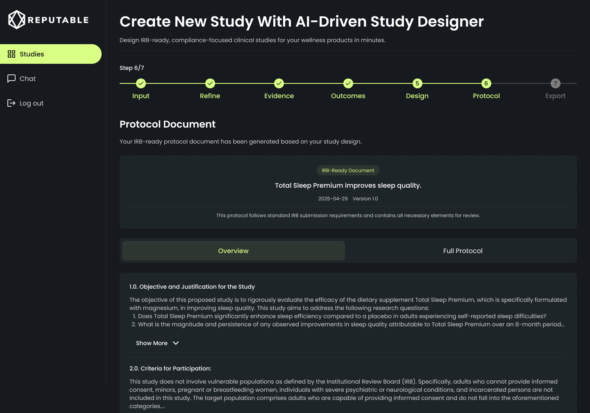
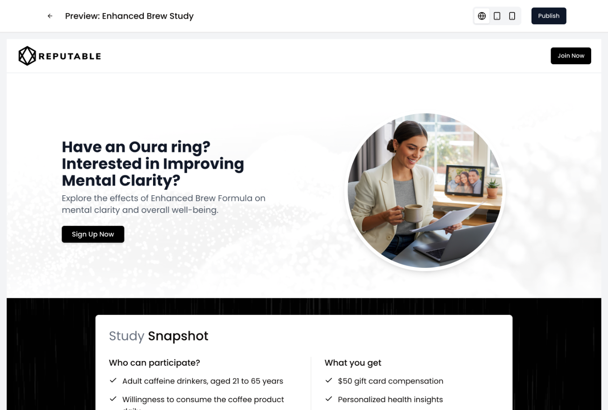
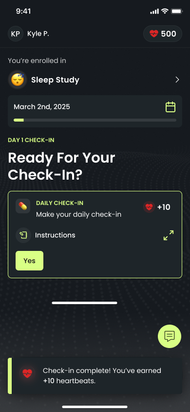
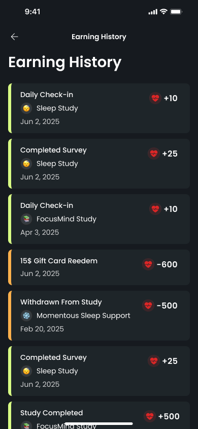
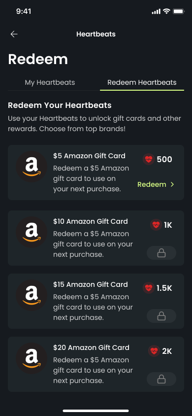
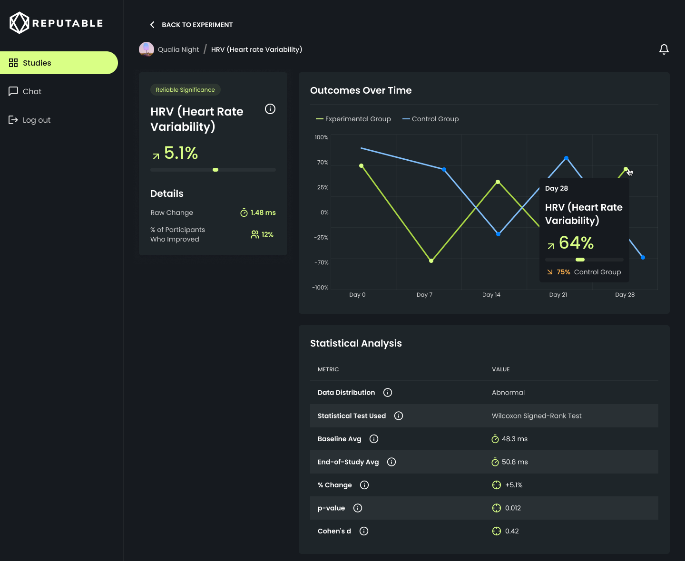

Reputable Health tests health and wellness products on real people wearing Oura rings, Apple Watches and Whoops. I designed the platform a study runs on, end to end: an AI study designer that turns a one-line product claim into an IRB-ready protocol, AI recruitment, a participant app with rewards, and the dashboard where researchers read the results.

Reputable runs real-world-evidence studies: a brand has a claim, say "our magnesium supplement improves sleep," and Reputable tests it on real participants whose wearables measure what actually changes. That is faster and cheaper than a traditional clinical trial, but only if every step of the study is too.
Each study has four sets of people to serve. The brand needs a study rigorous enough to stand up to an ethics review. The recruiting team needs the right participants, fast. Participants need a reason to keep checking in for weeks. And researchers need results they can trust. The design job was to make one platform that carries a study through all four, without a specialist hand-building each step.
An AI study designer. A brand starts with a product and a sentence about what it does. The designer walks them through seven steps: it sharpens the claim into something testable, reviews the published research, suggests how to measure the outcome, recommends a study design and sample size, and writes the protocol. The design challenge was trust. An AI that says "use 60 participants" is useless to a scientist unless it shows its working, so every recommendation explains itself in plain language, shows the statistical power behind it, and cites the studies it is based on (above). The brand stays in control: every criterion can be edited, and the sample size is a slider, not a verdict.

A protocol, not a chat transcript. The end of the flow is a document a review board recognizes: objective, participation criteria, sample size justification and references, in the structure an IRB submission expects. The team starts from a complete draft instead of a blank page, and refines it.

Recruitment from the same brief. Once a study exists, it needs people. Reputable Recruit reads the study and generates the recruitment landing page, on-brand imagery, an eligibility survey and a set of Facebook ads, so launching a study no longer waits on a designer. The team reviews and publishes rather than building each piece by hand.



A reason to keep checking in. A study is only as good as the data participants keep sending, and drop-off is the quiet killer of real-world studies. I designed the participant app around a daily rhythm, plus Heartbeats, a rewards system: every check-in and survey earns points, the balance is always visible, and points unlock gift cards in tiers. Heartbeats was designed and specced for launch, with an admin side for the study team to manage it.

Results researchers can defend. The dashboard follows every participant's wearable data, check-ins and surveys, and flags who is falling behind so the team can reach out before they drop. For each outcome it compares the experimental group with the control group over time and shows the statistics underneath: which test was used, the p-value and the effect size. The headline number is never shown without the evidence for it.
In clinical research the AI can't just be fast. Every recommendation has to show its sources, because the review board is going to ask.
The AI study designer shipped: a brand can go from a one-line claim to an IRB-ready protocol draft in a single guided session. Reputable Recruit went live for the team's studies, turning each new study into a launch-ready recruitment kit. Heartbeats and the participant app were designed and specced for launch.
Together they cover the whole life of a study: design it, fill it, keep people in it, and read what happened. That is the work I like best, seeing a product whole, and designing the AI parts so the people who rely on them can see why they should.